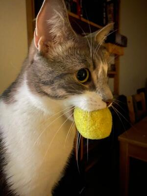

Hyppiva lintu
Mocca leikkii iloisena hyppivällä lintu lelulla. Lelu on ostettu Zooplussasta.
Linkki leluunEtsitään nameja
Tupla ja Mocca etsivät nameja pullien joukosta. Pullat älylelu ostettu Ikeasta.
Linkki leluunElektroninen hiiri
Molemmat kissat leikkivät itsestään liikkuvalla robotti hiirellä. Ladattava ja hauska lelu. Ostettu Tokmannista.
Linkki leluun

Tupla ja pallo
Tuplalla on suussa keltainen pehmeä pallo. Tätä ei ole enää saatavilla mistään.
Vihreä putkilo
Mocca leikki vilkkuvalla vihreällä putkilolla. Ostettu mustista ja mirristä.
Linkki leluunTupla ja pallo
Tuplan suosikki lelu, jota kutsutaan myös murinapalloksi. Ostettu mustista ja mirristä. Linkki leluun
Mocca ja poro
Mocca rakastaa potkuleluja. Leikkii joululahjaksi saadulla kissanminttu porolla.